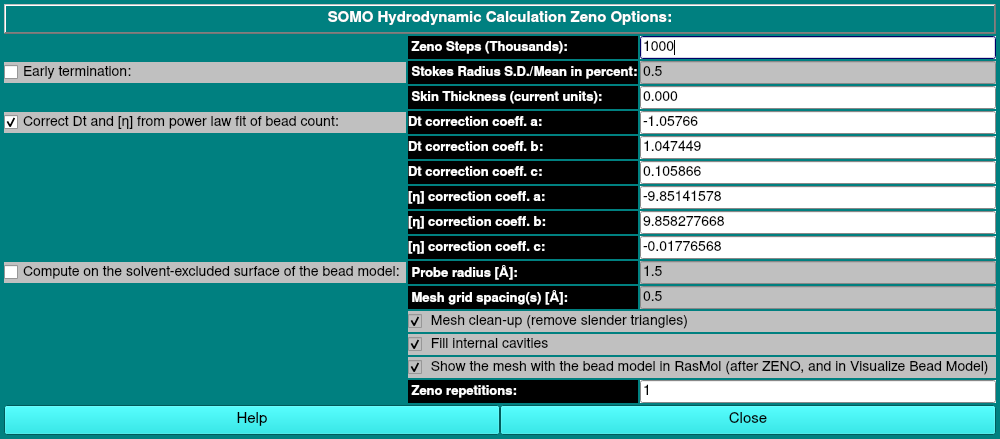

| |
Manual |
In this module, the options and settings controlling the ZENO method for computing the hydrodynamics and other properties of a model are set. The following description of the ideas behind ZENO reproduced below are taken from the Zeno website http://www.stevens.edu/zeno/ (see Douglas, Some Applications of Fractional Calculus to Polymer Science, Adv. Chem. Phys. 102:121?191, 1997; Douglas et al., Hydrodynamic friction and the capacitance of arbitrarily shaped objects, Phys. Rev. E 49:5319-5331, 1994; Mansfield et al., Intrinsic Viscosity and the Electric Polarizability of Arbitrarily Shaped Objects, Phys. Rev. E, 64:61401-61416, 2001).
Purpose of Zeno: Algorithm (Zeno) for calculating the Stokes friction coefficient, electrostatic capacity, intrinsic viscosity, intrinsic conductivity and electrical polarizability of essentially arbitrarily-shaped objects to unprecedented accuracy.
Idea Behind Calculation: There is a fundamental relation between the Laplacian operator and random paths whose step size has a finite variance. This correspondence allows for the solution of the equations of mathematical physics to be formally expressed as averages over random walk trajectories. The advantage of this method is that it allows for the calculation of transport properties for objects having essentially arbitrary shape. This method becomes a practical and highly accurate method for performing transport property calculations when random walks are generated by computer.
Electrostatic-Hydrodynamic Analogy: Hydrodynamic and electrostatic properties are determined, respectively, by the Navier-Stokes and Laplacian equation. However, a specific orientational averaging of the Navier-Stokes equations brings them into the form of Laplace's equation. This means that an approximate analogy exists between certain hydrodynamic and electrostatic properties. Particularly, the hydrodynamic radius and the intrinsic viscosity of a macromolecule are proportional, respectively, to the capacitance and polarizability of a perfect conductor having the same shape as the macromolecule. These proportionalities have been extensively tested on diverse shapes, and are always found to be accurate to 1% for the hydrodynamic radius and 5% for the intrinsic viscosity. Zeno determines the electrostatic properties directly by Monte Carlo path integration, and then infers hydrodynamic properties from these proportionalities.
Computational Method: The Zeno computational method involves enclosing an arbitrary-shaped probed object within a sphere and launching random walks from this sphere.The probing trajectories either hit or return to the launch surface ('loss'), whereupon the trajectory is either terminated or reinitiated.

Compute Zeno checkbox. This will launch a Monte Carlo numerical path integration that generates a large number of random walks in the space outside the body. Because the Laplacian operator governs the statistics of these walks, sums taken over these random walks yield:
Early termination: checkbox. Instead of a fixed number of steps, the random walks continue until the relative standard deviation of the Stokes radius (that is, of the capacitance) falls below the percentage entered in the Stokes Radius S.D./Mean in percent: field, and the Zeno Steps field is not used. (Default: off, 0.5%)
The Skin Thickness (current units): The skin thickness is utilized in the Zeno calculation. It is a multiplier of the launch radius. The launch radius is the radius of a sphere centered at zero which contains the model. Leaving the value at 0 uses the internal default value of 1E-6. The authors of Zeno recommend that the value should be on the order of 1E-5 to 1E-6. (Default: 0.000)
More recently, we have discovered a discrepancy between the translational diffusion coefficient as calculated by ZENO and GRPY. We found that the ZENO calculation of Dt(20,w) constantly produced relatively larger (~+1-2%) values than those computed by GRPY for our test set of 25 protein structures. A symmetrical behavior was found when comparing the intrincic viscosity [η] calculated values, with ZENO underestimating the values by roughly the same percentages. We also used more elongated structures (derived from the fibrinogen main body crystal structure 3GHG.pdb), confirming these trends. As described in our recent publication (Brookes, Zuk and Rocco, Bead model hydrodynamics: an in-depth comparison between GRPY and ZENO. Eur Biophys J (2025). https://doi.org/10.1007/s00249-025-01758-8), we found heuristic dependencies as a function of the number of beads in the model, described by power laws in the form y = a + b * xc), whose coefficients are listed in this panel. Applying these corrections reduced the discrepancy between ZENO and GRPY calculated Dt(20,w) values to an average of -0.11±0.22% (range -0.56 +0.27%) for globular proteins, and to +0.25±0.16% (range +0.06 +0.52%) for elongated structures. The second power-law fit corrects ZENO-calculated [η] values reducing the average percent difference for globular proteins to -0.03±0.44% (range -0.79 +0.92%), and to +0.48±0.42% (range +0.21 +0.85%) for elongated structures. These heuristic ZENO corrections are now offered as a default option from the August 2025 release of US-SOMO.
Compute on the solvent-excluded surface of the bead model checkbox. Instead of running ZENO on the beads themselves, US-SOMO first computes the solvent-excluded (molecular) surface of the bead model, the surface traced by a spherical probe rolling over the beads, as a closed triangle mesh, and ZENO then runs on that mesh. The mesher is sesmesh (https://github.com/ehb54/sesmesh, MIT license), which is built into US-SOMO. The beads' centres and radii are the spheres, so any bead model can be meshed; for a van der Waals bead model the mesh is the molecular surface of the structure. Beads of radius 0 are left out. (Default: off)
The bead-count correction above is fitted to bead models, so it is not applied to a mesh, and its checkbox is disabled while this option is on. The bead-overlap check is skipped, and the dimensionless intrinsic viscosity uses the volume enclosed by the mesh. The results report the mesh: the spheres meshed, the numbers of triangles and vertices, its area and volume, and whether it is a closed manifold. The output file names carry the mesh settings: for example _MC1000-SES_p1_5_h0_5 for a probe radius of 1.5 Å and a grid spacing of 0.5 Å, with _raw added without clean-up and _cav when cavities are kept. The .bod file with the same name holds the mesh, as one TRIANGLE line per triangle. The probe radius and grid spacing are given in Å also when the model is in nm.
Extrapolation to an infinitely fine mesh. With several grid spacings, ZENO runs on the mesh of each spacing in turn (with the repetitions set below on each), every run with its own output files as above. The results of each model are then fitted linearly in 1/N, N being the number of triangles, and the intercept at 1/N = 0 is the value for an infinitely fine mesh. A mesh's errors in area and volume fall as the square of the spacing, that is as 1/N. The results go to a CSV file per model, named with the number of meshes, for example 1AKI_1_MC1000-SES_p1_5_extrap4-<bead model suffix>.csv for four spacings. The file lists the number of triangles, the spacing and the .zno and .bod files of each mesh. For each mesh it then gives the mesh area and volume, Rs, Dt, s, f, f/f0, [η] and the dimensionless [η], each with the extrapolated value, its standard error, the slope and χ2. The extrapolated Rs, Dt and [η] are also shown in the main window. The file is in the format of the BEST results, so the BEST Analysis module can load it to plot the series, reject points, and fit it in other forms. Use at least three spacings: a line through two points has no error estimate. The summary of results in the main window averages over all the meshes.
Scripts and batch mode. These settings are the program's global parameters zeno_mesh (true or false), zeno_mesh_probe, zeno_mesh_h (one spacing, or several separated by commas without spaces), zeno_mesh_clean, zeno_mesh_fill_cavities and zeno_mesh_view (true or false). In a -g script they are set with the global command, for example global zeno_mesh true and global zeno_mesh_h 0.6,0.5,0.4,0.3, before batch zeno and batch start. The batch mode runs ZENO with the same settings, so it also meshes each model, and extrapolates when several spacings are set.
The last entry in this option panel is the Zeno repetitions. ZENO could be relaunched sequentially on the same model, providing additional statistics on the calculated parameters. Default: 1 (meaning ZENO will run just once for each model).
This document is part of the UltraScan Software Documentation
distribution.
Copyright © notice.
The latest version of this document can always be found at:
Last modified on November 13, 2026